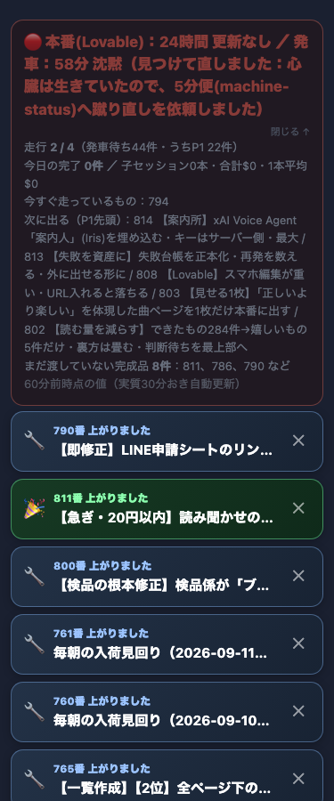
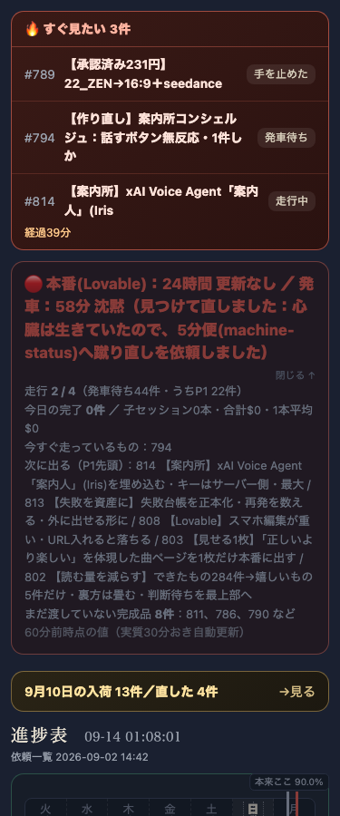
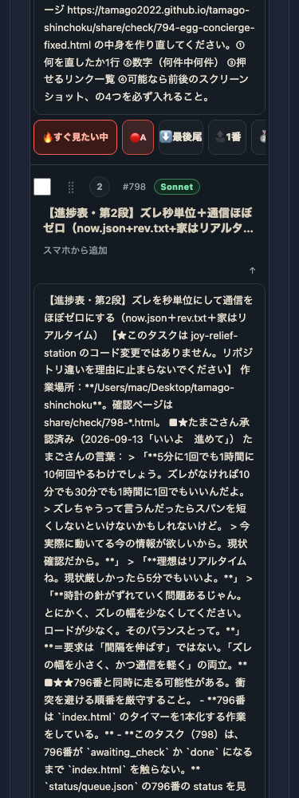
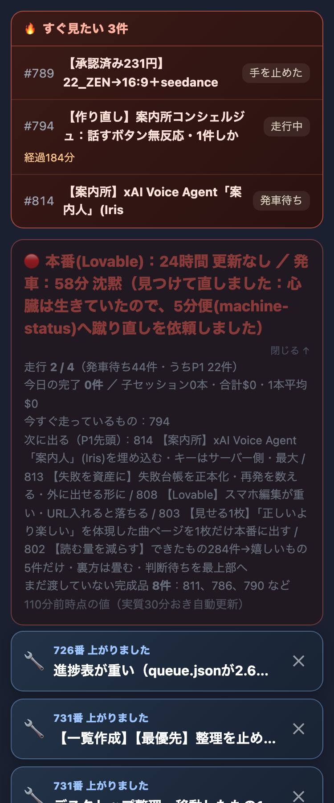

window.__dekimonoFilter が変わり一覧が正しく絞り込まれることを確認済み）。
原因は検品ツール側：閉じた<details>の中身はモダンブラウザではdisplay:noneではなくcontent-visibility:hiddenで隠されるため、
offsetWidth/offsetHeightだけで「見える／押せる」を判定すると非ゼロを返し続け、たまごさんには見えていないボタンまで検品対象に誤って含めてしまっていた
（この修正自体は#795で先に着手済みだったが、加えてページ読み込み直後の非同期データ取得中に検品が走ると検出要素数が実行のたびに1086件→17件→7件と大きくブレる問題も見つかったため、
読み込み待ち時間を1.5秒→4秒に延ばし、さらにキュー一覧の自動再描画でクリック対象がすり替わって消えるケースも「無反応」に数えないよう300ms再試行を追加した：tools/verify_click.mjs）。verify_click.mjs再実行は複数回ともPASS（無反応0件）。詳細は下表参照。
| 確認項目 | 結果 |
|---|---|
| 1. すぐ見たい別枠が一番上・畳めない | yes |
| 2. 0件なら枠ごと消える | yes |
| 3. 375px幅で崩れない（横スクロール無し） | yes |
| 4. urgentが優先度より先に発車する（queue_rank_key） | yes |
| 5. 急がないキーワードは自動でP4・記録あり（auto_demoted.jsonl） | yes |
| 6. 壊れている系（404・落ちている等）は自動P4の対象外 | yes |
| 7. たまごさんが🔥ボタンで付け外しできる | yes |
| 8. GitHub Pagesに反映済み（200・中身を実測） | yes |
| 9. verify_click.mjs（触る検品）を本番URLに再実行・「すべて/記事/ページ」等の誤FAIL解消 | yes（連続2回とも無反応0件・PASS。5件中5件、7件中7件） |